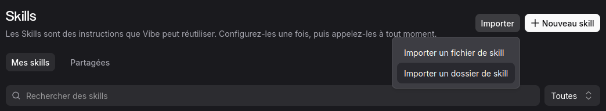

Bienvenue sur ce guide pratique, pensé pour les artisans, indépendants et petites entreprises qui veulent exister sur internet sans se former en informatique. À la fin de ce parcours, vous aurez un site en ligne, gratuit, rapide, que vous mettez à jour en quelques minutes — en parlant simplement à votre assistant Vibe.
Pourquoi GitHub Pages ?
Un site vitrine, c'est votre boutique sur internet : ouverte 24h/24, elle vous présente, montre vos réalisations et donne un moyen simple de vous contacter. GitHub Pages est un service gratuit de la société GitHub qui héberge ce genre de site sans publicité et sans abonnement. Vibe s'occupe de toute la technique à votre place : vous lui fournissez le contenu (vos textes, vos photos), il fabrique les pages, les règle pour Google et les met en ligne.
Ce qu'il vous faut avant de commencer
- Un ordinateur et une connexion internet.
- Un compte GitHub (gratuit) — c'est votre « espace de rangement » en ligne.
- L'application Vibe, connectée à votre compte GitHub.
- Vos contenus : quelques phrases sur vous, votre métier, vos réalisations, et vos plus belles photos.
Étape 1 — Préparer ses espaces GitHub
GitHub fonctionne avec des « espaces de rangement » (on appelle ça des dépôts). Pour un site avec Vibe, on en utilise deux :
- L'espace du contenu : il contient vos textes et vos images, comme un classeur où vous rangez vos fiches. Un fichier par sujet :
presentation.md,realisations.md… - L'espace du site : c'est l'espace que GitHub Pages publie automatiquement. Vous n'y touchez jamais : Vibe le remplit à partir de l'espace du contenu.
Concrètement, sur github.com : créez un premier espace, nommez-le par exemple monsite.source, et un second nommé exactement votre-pseudo.github.io (remplacez votre-pseudo par votre identifiant GitHub). Ce nom précis est la formule magique : GitHub Pages comprend que tout ce qui y est rangé doit être publié sur https://votre-pseudo.github.io.
À retenir : le contenu se lit dans l'espace du contenu, le site rendu s'écrit dans l'espace du site. Jamais l'inverse.
Étape 2 — Préparer Vibe avec les « skills »
Un skill est une instruction-règle que Vibe peut réutiliser : on la configure une fois, puis on l'appelle quand on en a besoin — un peu comme une recette notée sur un carnet. C'est ce qui évite de réexpliquer à chaque fois comment sont organisés vos espaces, comment doit être générée une page, quelles règles de référencement appliquer.
Pour en ajouter : dans Vibe, ouvrez la fenêtre Skills, puis cliquez sur Importer (ou + Nouveau skill si vous partez de zéro). Vous pouvez importer un fichier ou un dossier de skill tout prêt :

Ce guide lui-même est fabriqué avec un skill « webmaster » : c'est lui qui impose le plan de travail (vérifier l'état du projet, préparer une préversion, attendre votre accord, publier).
Étape 3 — Rédiger son contenu
Dans l'espace du contenu, vous écrivez vos textes dans des fichiers simples. Pas de mise en page compliquée : quelques conventions suffisent.
- Un
#en début de ligne crée un titre de section. - Un
insère une photo. - Les images se rangent dans le dossier
images/.
Quelques conseils rédaction :
- Une page = un sujet. Une présentation, une page réalisations, une page contact. Simple à lire, simple à référencer.
- Écrivez comme vous parlez. Vous n'êtes pas en dissertation : vous présentez votre métier à un voisin.
- Soignez vos photos : lumineuses, nettes, orientées paysage de préférence. Une belle photo vaut tous les discours.
- Pensez aux mots que vos clients tapent sur Google (« plombier Pau », « tapissier d'ameublement Bordeaux ») et utilisez-les naturellement dans vos textes.
Étape 4 — Générer et essayer son site
Demandez ensuite à Vibe : « génère mon site à partir de mon contenu ». Il fabrique alors les pages, les règle pour Google (titres, descriptions, données de contact lisibles par les moteurs), et prépare un sitemap — le plan du site que Google consulte.
Règle d'or du flux de travail : tout changement passe d'abord par une préversion. C'est votre showroom privé : vous le téléchargez, vous l'ouvrez sur votre ordinateur, vous cliquez partout. Rien n'est publié sans votre accord explicite. C'est Vibe qui gère ces allers-retours.
- Vous demandez une modification → il prépare une préversion.
- Vous essayez chez vous → il corrige.
- Vous validez → il publie dans la version en ligne.
Étape 5 — Mettre en ligne
Quand la préversion vous plaît, dites simplement « je valide, mets en ligne ». Vibe publie alors le site sur GitHub Pages, et votre page devient accessible à l'adresse https://votre-pseudo.github.io. Comptez quelques minutes pour que GitHub l'active la toute première fois.
Votre site est en ligne : il ne reste qu'à le faire vivre.
Et après ? Faire vivre son site
Un site vitrine n'est pas figé. Quelques réflexes simples :
- Ajoutez une réalisation dès qu'elle est photogénique : deux photos, trois phrases, et Vibe s'occupe du reste.
- Relisez vos infos de temps en temps : horaires, téléphone, zone d'intervention. Une info périmée fait fuir les clients.
- Regardez la version de travail plutôt que la version en ligne quand vous hésitez : c'est fait pour ça.
Et si un jour quelque chose casse, pas de panique : on peut toujours revenir en arrière — chaque publication est historisée, et un retour à la version précédente se fait en une demande.
Récapitulatif
- Créer ses deux espaces GitHub (contenu + site).
- Importer le skill webmaster dans Vibe.
- Rédiger ses textes et ranger ses photos dans l'espace du contenu.
- Demander la génération, essayer la préversion chez soi.
- Valider — le site est en ligne.
Bonnes créations !